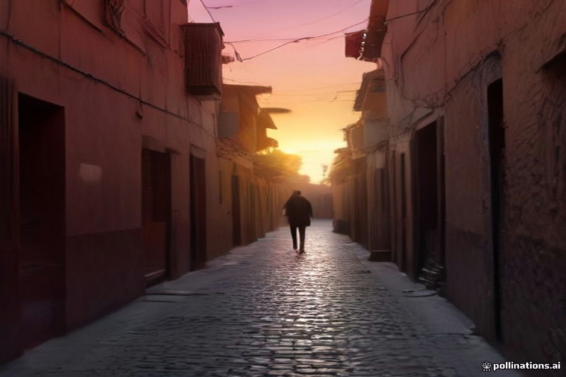

Marrakech Menara Airport is compact, efficient, and immediately overwhelming. The moment you step through the sliding doors of arrivals, you enter a dense ecosystem of men offering help with luggage, pointing toward nonexistent taxi strikes, or claiming the medina is closed. Most of them are simply looking for a tip or hoping to steer you toward a commission-paying shop.
If you are heading out on a desert tour with us the next morning, your first night in the medina sets the tone for the trip. A calm arrival means you actually get some sleep instead of spending two hours arguing over a inflated taxi fare or dragging your suitcase through dark alleyways behind a stranger who demands fifty euros to find a door with no sign.
Exiting the Terminal and Ignoring the First Wave
Ignore everyone inside the terminal and right outside the exit doors who approaches you offering directions. Porters in casual clothes will grab your wheeled suitcase before you can blink; once they touch it, they expect payment. Keep a firm hand on your bags and keep walking.
Walk straight past the casual hangers-on toward the official taxi rank. You will see airport staff in high-visibility vests or uniforms managing the queue. It is loud, but it is orderly.
- Never let anyone take your rolling suitcase out of your hands.
- Ignore people outside arrivals claiming your riad is closed or unreachable.
- Look for official airport personnel wearing uniforms near the taxi stand.
Getting an Official Taxi to the Medina
There are fixed official rates posted on a large board near the main taxi rank for trips to the medina or the Palmeraie. For most central riads, the daytime rate is around 70 to 100 dirhams (roughly 7 to 10 euros). After 8:00 PM, a nighttime surcharge applies, bringing it closer to 150 dirhams.
Always confirm the driver turns on the meter, or explicitly agree on the price in dirhams before you put a single bag in the trunk. If a driver refuses the meter and quotes an absurd price like 300 dirhams, walk to the next taxi in line without hesitation.
- Confirm the price or meter before loading your bags.
- Keep small bills (20 and 50 dirham notes) ready so drivers cannot claim they lack change.
- Refuse any taxi where the driver insists on picking up an 'extra guide'.
The Drop-Off Point and the 'Closed Street' Trick
Cars cannot drive into most of the Marrakech medina because the streets are narrow walkways reserved for pedestrians, motorcycles, and carts. Your taxi will drop you at the nearest accessible square—such as Jemaa el-Fnaa, Bab Doukkala, or Riad Laarouss.
This is where the classic scam happens. A local hanging around the drop-off point will casually tell you that your riad is down a street that is currently 'closed for a festival,' 'under construction,' or 'private property.' They will offer to lead you the long way around, only to trap you in a rug shop or demand a heavy fee at the end.
- Know your drop-off gate or square before you leave your hotel.
- Never believe anyone saying your riad street is closed.
- Trust your phone's offline map over a helpful stranger on the corner.
Using Offline Maps to Reach the Door
Before you land, download an offline mapping app like Maps.me or Google Maps with the Marrakech medina saved. GPS works well enough through the narrow alleys to keep you oriented, even when cell signals bounce around.
If you get genuinely turned around, step inside a fixed storefront—like a pharmacy or a reputable cafe—and ask the shopkeeper to call your riad. Most riad managers will happily send a staff member out to meet you at a nearby landmark rather than letting you wander.
- Download offline maps before boarding your flight.
- Ask shopkeepers for directions instead of idle men on street corners.
- Contact your riad directly if you are within five minutes of the door.
| The Tourist Trap | The Realistic Approach | |
|---|---|---|
| Airport Exit | Accepting help from casual porters outside doors | Walking past everyone with hands on your bags |
| Taxi Fares | Accepting a flat 300 MAD rate without asking | Insisting on the official board rate or meter (70-150 MAD) |
| Medina Drop-Off | Following a random youth who claims your street is closed | Using offline GPS to walk straight from the drop-off square |
| Luggage Handling | Letting strangers wheel your bags through the souks | Carrying your own packs or using your riad's official escort |
| Getting Lost | Asking random passersby on dark street corners | Stepping into a lit shop to call your riad manager |

Illustration, not a photograph — for the real thing, you'll have to stand on the ridge yourself.
Quick answers
A few follow-up questions travelers ask about this.
Should I exchange money at Marrakech airport?
Only exchange a small amount (around 20 euros or dollars) at the airport bureau for immediate taxi fare. You will get a much better exchange rate at banks or official exchange booths inside the city center.
Do Marrakech taxis accept card payments?
No. Official airport and city taxis only accept cash, specifically Moroccan Dirhams. Keep plenty of small denomination notes on hand for transit and tips.
What should I do if a fake guide demands money after showing me the way?
Firmly state you did not ask for assistance, offer a small tip (10 to 20 dirhams) if you want to defuse the situation quickly, and walk away toward a crowded area. Do not engage in a prolonged argument.
Planning your own route?
Tell us your dates and what matters to you — we'll answer with a straight recommendation, not a brochure.
Send an inquiry See the itineraries